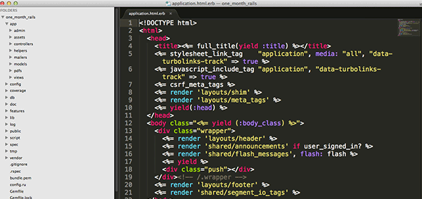

Steve Lokietz

Full-Stack Web Developer
About Me:
I am a full-stack web developer with over 20 years of experience in Information Technology, blending a diverse combination of development, user support, and functional skills and responsibilities. As an accomplished software designer, I take pride in ensuring that I fully understand my users' requirments, and that those requirements are fully and properly implemented in my code. With extensive experience as both a developer and a business systems analyst, I am able to collaborate effectively with all members of any project team, both technical and functional. I am well-accomplished in testing/QA, project/team leadership, and knowledge transfer (both individual and group). I am respectful of deadlines, and ready to go the extra mile to get the job done on time.
Projects:
WATCH THIS SPACE FOR GITHUB LINKS
- Member Request App, Ruby on Rails
- National Geographic Contents Web Scraper, Ruby on Rails
- National Geographic Contents Web Scraper, Ruby
- Wynboard, Ruby on Rails
- Quote Attribution "Guesser", Ruby
- WynOverflow, Ruby on Rails
Professional Skills:
- System Design, Development, & Support
- Development Tools: Ruby, Rails, SQL, HTML, CSS, JavaScript, Jquery, SQR, PeopleSoft Development, FORTRAN, COBOL
- Relational Database Design & Development
- User Requirements Analysis
- Business Process Analysis & Design
- Software Design
- Network & Data Communications Consulting
- Indiviual & Group User Training
- Team Leadership
- Project Management
- Technical Sales Support (hardware & software)
- Local Area Network Management
- Production Support
- Troubleshooting & Debugging
Industry Experience:
- Health Care
- Manufacturing & Retail
- Software Application Systems
- Education
- Pharmaceuticals
- Professional Recruiting
- Staff Augmentation
- Gaming
- Publishing
- Professional
- Assisted Living
- Technology
Education:
- B.S., Biological Sciences, Stanford University, 6/1979
- Graduate, The Wyncode Academy Development Bootcamp, 6/2015
- Graduate coursework in Technology Management, Mercer University in Atlanta, 1993-1994
- Graduate coursework in Advanced Technology, Polytechnic University, 1989
Community Participation:
- Broward Ruby Brigade
- Miami Ruby Brigade
- Code for Fort Lauderdale
- Design Thinking/Fort Lauderdale
